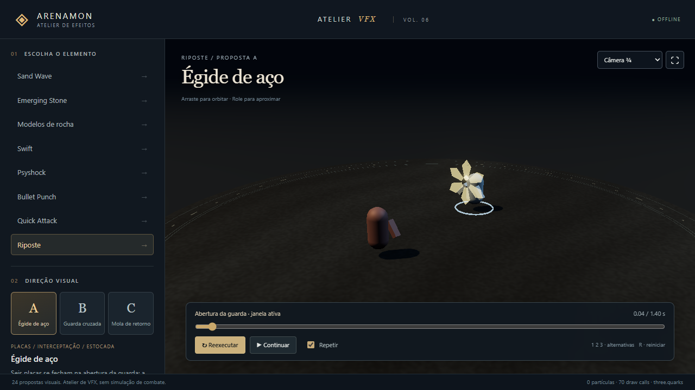
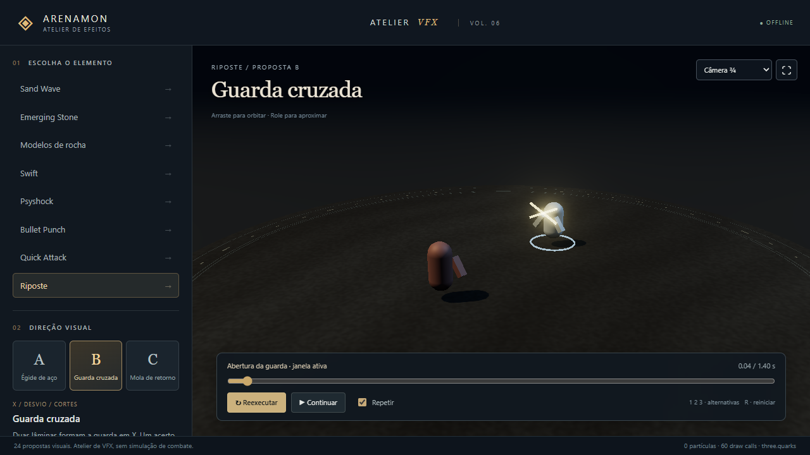
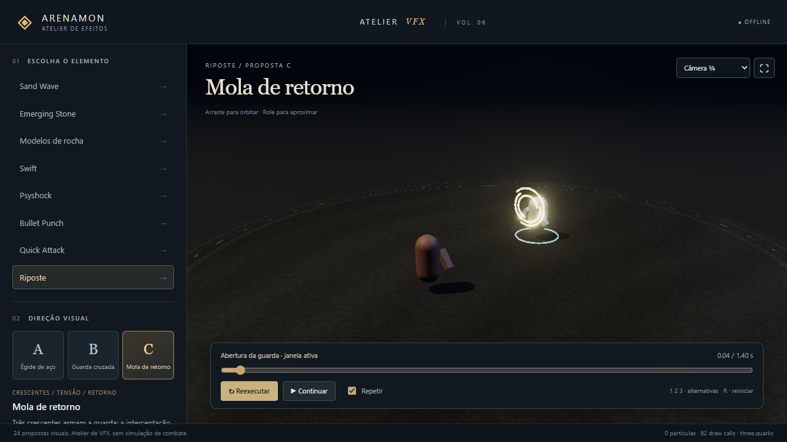

← Portal · Abrir atelierRiposte · abertura da guarda e resposta
Janela atual: 0–0,59 s; postura: 0,65 s. Só um acerto elegível dispara o contra-ataque. Capturas Edge/SwiftShader, 1280 × 720.
A · Égide de aço

B · Guarda cruzada

C · Mola de retorno

Diagnóstico dos cenários e descarte de recursos